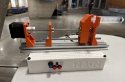
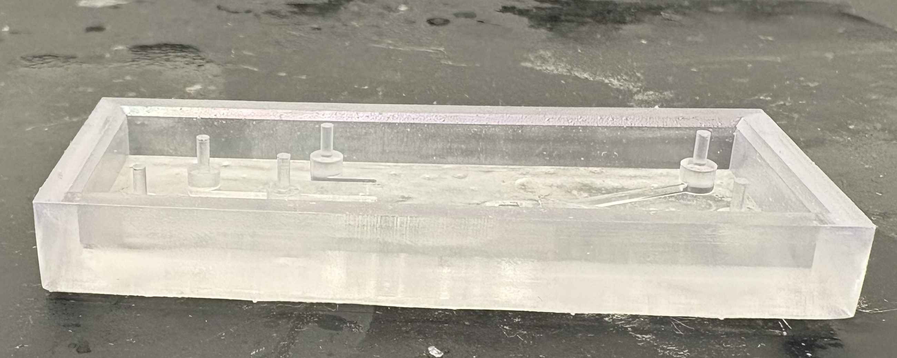
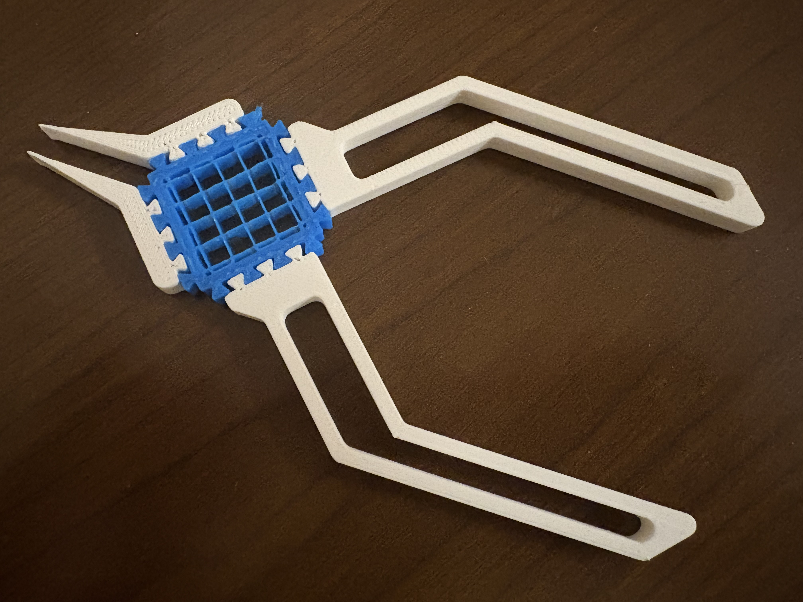

My Digital Fabrication Projects



Syringe Pump Project
A custom-designed syringe pump for precise liquid handling. Click to learn more!
Microfluidic Pinch Flow Fractionation
A high-precision microfluidic device for size-based particle separation using pinched flow fractionation. Click to learn more!
Print-in-Place Pliers
A Functional, fast, and fully 3D-printed — exploring the design and performance of modular print-in-place pliers. Click to learn more!
Top Down Modeling: Bike Phone Holder
Custom 3D-printed Bike Phone Holder With a Satisfying Detent Snap and a Custom Fit. Click to learn more!